소방설비산업기사(전기) (2007-03-04 기출문제)
1과목: 소방원론
1. 증기비중에 대한 설명 중 옳지 않은 것은?
- 증기비중이 1보다 크면 공기보다 무겁고, 1보다 작으면 공기보다 가벼운 것을 의미한다.
- 건조공기의 무게를 1로 했을 때 이와 비교되는 증기의 상대적 무게를 증기비중이라 한다.
- 증기비중은 증기의 분자량을 공기의 분자량으로 나눈 값이다.
- 가스누출시 증기비중에 따라서 LNG는 바닥에 LPG는 위에 모이게 된다.
(정답률: 74%)

2. 피난대책의 일반적 원칙이 아닌 것은?
- 피난 수단은 원시적인 방법으로 하는 것이 바람직하다.
- 피난 대책은 비상시 본능상태에서도 혼돈이 없도록 하여야 한다.
- 피난 경로는 가능한 한 길어야 한다.
- 피난 시설은 가급적 고정식 시설이 바람직하다.
(정답률: 93%)
3. 연소물에 의한 분류에서 A급 화재에 속하는 것은?
- 유류
- 목재
- 전기
- 가스
(정답률: 96%)
4. 황린의 저장 방법으로 옳은 것은?
- 물속에 저장한다.
- 아세톤 속에 저장한다.
- 강산화제와 혼합하여 저장한다.
- 아세틸렌 가스로 봉입하여 저장한다.
(정답률: 84%)
5. 제4류 위험물의 일반적인 특성이 아닌 것은?
- 인화가 용이한 액체이다.
- 대부분의 증기는 공기보다 가볍다.
- 물보다 가볍고 물에 녹지 않는 것이 많다.
- 대부분 유기화합물질이다.
(정답률: 59%)
6. 다음 중 분해연소가 일어나는 가연물은?
- 목재
- 나프탈렌
- 코크스
- TNT
(정답률: 62%)
7. 다음 중 정전기를 방지하기 위한 대책에 해당되지 않는 것은?
- 접지를 한다.
- 물질의 마찰을 크게 한다.
- 공기를 이온화한다.
- 공기의 상대습도를 일정 수준 이상으로 유지한다.
(정답률: 91%)
8. 철골콘크리트조의 기둥에서 내화구조의 기준으로 옳은 것은?
- 작은지름 15cm 이상으로서 철골을 두께 4cm 이상의 철망 몰탈로 덮은 것
- 작은지름 20cm 이상으로서 철골을 두께 7cm 이상의 콘크리트 블록으로 덮은 것
- 작은지름 25cm 이상으로서 철골을 두께 5cm 이상의 콘크리트로 덮은 것
- 작은지름 30cm 이상으로서 철골을 두께 3cm 이상의 석재로 덮은 것
(정답률: 66%)
9. 양초와 같이 고체가 기체로 되어 연소하는 형태는 어떤 연소에 해당하는가?
- 표면연소
- 분해연소
- 자기연소
- 증발연소
(정답률: 80%)
10. 다음 중 연소의 3 요소가 아닌 것은?
- 점화원
- 공기
- 연료
- 촉매
(정답률: 83%)
11. 건물내부에서 화재가 발생하여 실내온도가 27℃ 에서 1227℃로 상승한다면 이 온도상승으로 인하여 실내공기는 처음의 몇 배로 팽창하겠는가? (단 화재에 의한 압력변화 등 기타 주어지지 않은 조건은 무시한다.)
- 3배
- 5배
- 7배
- 9배
(정답률: 64%)
12. 다음 중 대기압을 나타내는 단위는?
- mmHg
- cd
- dB
- Gauss
(정답률: 88%)
13. 다음 중 화재의 원인으로 볼 수 없는 것은?
- 복사열
- 마찰열
- 기화열
- 정전기
(정답률: 68%)
14. 보통 화재에서 눈부신 백색(휘백색)불꽃의 온도는 몇 ℃ 정도인가?
- 600℃
- 900℃
- 1200℃
- 1500℃
(정답률: 81%)
15. 15℃의 물 1g을 1℃상승시키는데 필요한 열량은?
- 1cal
- 15cal
- 1kcal
- 15kcal
(정답률: 67%)
16. 소화기의 설치 장소로 적당하지 않은 곳은?
- 통행 또는 피난에 지장을 주지 않는 장소
- 사용시 반출이 용이한 장소
- 장난의 방지를 위하여 사람들의 눈에 띄지 않는 장소
- 위험물 등 각 부분으로부터 규정된 거리 이내의 장소
(정답률: 95%)
17. 다음 중 하론 1301의 화학식에 포함되지 않는 원소는?
- 탄소
- 염소
- 불소
- 브롬
(정답률: 75%)
18. 다음 화재 발생 위험에 대한 설명 중 옳지 않은 것은?
- 인화점은 낮을수록 위험하다.
- 발화점은 높을수록 위험하다.
- 산소 농도는 높을수록 위험하다.
- 연소 하한계는 낮을수록 위험하다.
(정답률: 73%)
19. 화재시 연소물의 온도를 일정 온도 이하로 낮추어 소화하는 방법은?
- 질식소화
- 냉각소화
- 제거소화
- 희석소화
(정답률: 94%)
20. 다음 중 질식소화와 가장 거리가 먼 것은?
- CO2 소화기를 사용하여 소화
- 물분무의 방사를 이용하여 소화
- 포말소화 약제를 방사하여 소화
- 가스 공급밸브를 폐쇄하여 소화
(정답률: 68%)
2과목: 소방전기회로
21. 그림의 회로에 흐르는 전류 I[A]는?
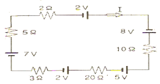
- 0.15
- 0.25
- 0.35
- 0.45
(정답률: 57%)
22. 다음 블록선도의 전달함수는?
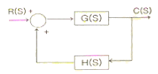
- G(S)
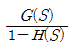
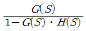
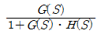
(정답률: 41%)
23. 전압 E=10+j5[V], 전류 I=5+j2[A]일 때 소비전력 P[W]와 무효 전력 Q[Var]는 각각 얼마인가?
- P=15, Q=7
- P=20, Q=50
- P=50, Q=10
- P=60, Q=5
(정답률: 47%)
24. 잔류편차가 있는 제어계로 P 제어라고 하는 것은?
- 비례제어
- 미분제어
- 적분제어
- 비례적분미분제어
(정답률: 67%)
25. 그림과 같은 논리회로의 논리식으로 알맞은 것은?
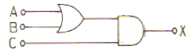
- X=AㆍB+C
- X=A+B+C
- X=AㆍC+B
- X=(A+B)ㆍC
(정답률: 69%)
26. 1 Hz 를 전기각으로 나타내면?
- 90°
- 120°
- 180°
- 360°
(정답률: 41%)
27. 바리스터(varistor)의 주된 용도는?
- 전압 증폭
- 온도 보상
- 출력전류의 조절
- 서지전압에 대한 회로 보호
(정답률: 79%)
28. 다음 그림은 브리지 정류회로를 나타낸 것이다. 교류 입력을 어느 곳에 연결하여야 하는가?
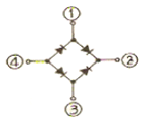
- ①과 ②
- ②와 ③
- ①과 ③
- ②와 ④
(정답률: 59%)
29. 정전압 전원장치에서 무부하시 단자전압이 24V, 전부하시 단자전압이 23V 라면 백분율 전압 변동율은 약 몇 % 인가?
- 4.3
- 4.5
- 4.7
- 4.9
(정답률: 44%)
30. 권선비가 20:1인 변압기의 1차전압이 220V, 1차전류가 10A이면 2차전압과 2차전류는 각각 얼마가 되는가?
- 2차전압 : 11V, 2차전류 : 0.5A
- 2차전압 : 11V, 2차전류 : 200A
- 2차전압 : 4400V, 2차전류 : 0.5A
- 2차전압 : 4400V, 2차전류 : 200A
(정답률: 50%)
31. 건물의 전기간선 배전방식으로 사용되지 않는 것은?
- 단상 2선식
- 단상 3선식
- 단상 4선식
- 3상 4선식
(정답률: 60%)
32. 저항과 콘덴서를 병렬로 접속한 회로에 직류 100V를 가하면 5A의 전류가 흐르고, 교류 300V를 가하면 25A의 전류가 흐른다. 이 회로의 리액턴스는 몇 Ω 인가?
- 7
- 14
- 15
- 30
(정답률: 50%)
33. 콘덴서의 정전 용량을 크게 하기 위한 방법이 아닌 것은?
- 극판간의 간격을 좁게 한다.
- 극판간의 전압을 높게 한다.
- 극판의 면적을 넓게 한다.
- 극판간에 넣는 유전체의 비유전율(εs)이 큰 것으로 한다.
(정답률: 45%)
34. 가변용량 소자에 해당되는 것은?
- 바랙터다이오드
- 포토다이오드
- 터널다이오드
- 제너다이오드
(정답률: 52%)
35. 정전용량 C1과 C2와의 직렬회로에 전압 V0를 가할 때 C2의 단자전압은?
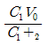
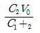
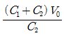
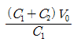
(정답률: 45%)
36. 다음 그림은 전자개폐기의 기본 회로도이다. OFF스위치와 보조 b접점을 나타낸 것은?
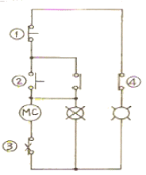
- OFF스위치 : ①, 보조 b접점 : ④
- OFF스위치 : ②, 보조 b접점 : ③
- OFF스위치 : ③, 보조 b접점 : ②
- OFF스위치 : ④, 보조 b접점 : ①
(정답률: 66%)
37. 다음 중 변압기 여자 전류에 가장 많이 포함된 고조파는?
- 제2고조파
- 제3고조파
- 제4고조파
- 제5고조파
(정답률: 70%)
38. 1000W의 전열기를 정격상태에서 10분간 사용한 경우 발열량은 몇 kcal 인가?
- 216
- 200
- 152
- 144
(정답률: 46%)
39. 부하전압과 전류를 측정하기 위한 연결방법으로 옳은 것은?
- 전압계 : 부하와 병렬, 전류계 : 부하와 직렬
- 전압계 : 부하와 병렬, 전류계 : 부하와 병렬
- 전압계 : 부하와 직렬, 전류계 : 부하와 직렬
- 전압계 : 부하와 직렬, 전류계 : 부하와 병렬
(정답률: 76%)
40. 펄스전압의 파형을 측정하는데 가장 적합한 것은?
- VTVM
- 전위차계
- 전압계
- 오실로스코프
(정답률: 60%)
3과목: 소방관계법규
41. 다음 중 다중이용업에 해당하지 않는 것은?
- 놀이방업
- 고시원업
- 콜라텍업
- 단란주점영업
(정답률: 35%)
42. 다음 중 건축물 내부의 천장 또는 벽에 설치하는 실내 장식물에 해당하지 않는 것은?
- 너비 10cm 이하의 반자 돌림대
- 합판
- 두께 4mm 이상인 종이류
- 흡음을 위하여 설치하는 흡음재
(정답률: 37%)
43. 다음 중 소방대상물에 속하지 않는 것은?
- 선박건조 구조물
- 산림
- 항해 중인 선박
- 차량
(정답률: 79%)
44. 정당한 사유없이 소방대가 현장에 도착할 때까지 사람을 구출하는 조치 또는 불을 끄거나 불이 번지지 아니하도록 하는 조치를 하지 아니한 관계자에 대한 벌칙은?
- 1년 이하의 징역
- 1000만원 이하의 벌금
- 500만원 이하의 벌금
- 100만원 이하의 벌금
(정답률: 60%)
45. 소방공사감리업의 업무 수행 내용과 거리가 먼 것은?
- 공사중인 소방시설등의 성능시험
- 공사업자의 소방시설등의 시공이 설계도서 및 화재안전기분에 적합한지에 대한 지도ㆍ감독
- 소방시설등의 설치계획표의 적법성 검토
- 실내장식물의 불연화 및 방염물품의 적법성 검토
(정답률: 50%)
46. 자동화재탐지설비의 하자보수 보증기간은?
- 1년
- 2년
- 3년
- 5년
(정답률: 71%)
47. 화재, 재난ㆍ재해 그 밖의 위급한 상황이 발생한 현장에는 소방활동에 필요한 자로서 그 구역에의 출입을 제한 할 수 있다. 다음 중 소방활동구역의 설정권자는?
- 소방방재청장
- 시ㆍ도지사
- 소방대장
- 시장, 군수
(정답률: 77%)
48. 소방시설공사업법상 소방시설업에 속하지 않는 것은?
- 소방시설관리업
- 소방시설성계업
- 소방시설공사업
- 소방공사감리업
(정답률: 64%)
49. 건축물 또는 공작물에는 화재발생 등 비상시에 안전한 곳으로 피난할 수 있도록 주된 출입구 외에 비상구를 설치하고 있다. 다음 중 비상구로 사용되는 출입구의 크기로 알맞은 것은?
- 가로 95cm 이상, 세로 110cm 이상
- 가로 85cm 이상, 세로 130cm 이상
- 가로 75cm 이상, 세로 150cm 이상
- 가로 65cm 이상, 세로 170cm 이상
(정답률: 56%)
50. 소방용수시설에서 저수조의 설치 기준으로 적합하지 않은 것은?
- 지면으로부터늬 낙차가 6m 이하일 것
- 흡수부분의 수신이 0.5m 이상일 것
- 소방펌프자동차가 쉽게 접근할 수 있도록 할 것
- 흡수에 지장이 없도록 토사 및 쓰레기 등을 제거할 수 있는 설비를 갖출 것
(정답률: 74%)
51. 소방시성의 작동기능점검을 실시한 자는 그 점검결과를 얼마 동안 자체 보관하여야 하는가?
- 1년
- 2년
- 3년
- 4년
(정답률: 82%)
52. 다음 특정소방대상물 중 주거용 주방자동소화장치를 설치하여야 하는 것은?
- 아파트
- 지하가중 터널로서 기이가 1000m 이상인 터널
- 지정문화재 및 가스시설
- 항공기 격납고
(정답률: 57%)
53. 다음 중 소방용기계ㆍ기구에 속하지 않는 것은?
- 화학반응식거품소화약제
- 방염액ㆍ방염도료 및 방염성물질
- 자동소화설비의 기기 중 유수검지장치
- 가스누설경보기
(정답률: 46%)
54. 다음 중 위험물에 대한 용어의 정의를 바르게 설명한 것은?
- 인화성 또는 발화성 등의 성질을 가지는 것으로서 대통령령이 정하는 물품을 말한다.
- 국무총리령으로 정하는 인화성 또는 발화성 등의 물품과 특수가연물을 말한다.
- 시ㆍ도 조례로 정하는 인화성 또는 발화성 등의 물품을 말한다.
- 행정자치부령이 정하는 인화성 또는 발화성 등의 물품과 특수가연물을 말한다.
(정답률: 80%)
55. 화재가 발생하는 경우 인명 또는 재산의 피해가 클 것으로 예상되는 때 소방대상물의 개수ㆍ이전ㆍ제거, 사용금지 등의 필요한 조치를 명할 수 있는 자는?
- 시ㆍ도지사
- 기초자치단체장
- 소방본부장 또는 소방서장
- 의용소방대장
(정답률: 71%)
56. 다음 특정대상물 중 숙박시설에 해당하지 않는 것은?
- 업무를 줄 하는 각 개별실에 일부 숙식을 할 수 있는 건축물
- 호텔ㆍ여관ㆍ모텔ㆍ여인숙
- 한국전통호텔
- 수산관광호텔
(정답률: 79%)
57. 다음 중 면적에 관계없이 건축허가 동의를 받아야 하는 소방대상물은?
- 근린생활시설
- 위락시설
- 항공기격납고
- 업무시설
(정답률: 78%)
58. 다음 중 소방신호의 설명으로 옳지 않은 것은?
- 훈련신호 : 훈련상 필요하다고 인정되는 때 발령
- 발화신호 : 화재위험경보시 발령
- 해제신호 : 소화활동이 필요없다고 인정되는 때 발령
- 경계신호 : 화재예방상 필요하다고 인정되는 때 발령
(정답률: 70%)
59. 다중이용업의 범위에 속하는 학원의 수용인원을 산정하려고 한다. 다음 중 바닥면적에 포함시켜야 하는 것은?
- 복도의 면적
- 계단의 면적
- 휴게실의 면적
- 화장실의 면적
(정답률: 55%)
60. 다음 중 화재를 진압하거나 인명구조 활동을 위하여 사용하는 소화활동설비에 포함되지 않는 것은?
- 비상콘센트설비
- 무선통신보조설비
- 연소방지설비
- 자동화재속보설비
(정답률: 54%)
4과목: 소방전기시설의 구조 및 원리
61. 자동화재탐지설비의 감지기 중 부착높이에 관계없이 설치할 수 있는 감지기는?
- 광전식감지기
- 다신호방식의 감지기
- 불꽃감지기
- 연기복합형감지기
(정답률: 63%)
62. 공기관식 차동식분포형감지기의 공기관의 노출부분은 감지구역마다 몇 m 이상 되도록 설치하여야 하는가?
- 10
- 20
- 30
- 40
(정답률: 59%)
63. 단독경보형감지기에 관한 설명으로 옳은 것은?
- 바닥면적이 800m2인 장소에는 최소 4개를 설치하여야 한다.
- 저렴하게 설치할 수 있으나 가능시험이 불가능하다.
- 상용전원을 주전원으로 사용하는 경우에는 2차전지를 사용할 필요가 없다.
- 음향장치가 감지기 자체에 내장되어 있어 화재발생을 감지한 경우에 자치적으로 경보가 가능하다.
(정답률: 67%)
64. 다음 중 청각장애인용 시각경보장치의 설치높이로 알맞은 것은? (단, 천장 높이가 2m를 초과하는 장소인 경우이다.)
- 바닥으로부터 1.5m 이하
- 바닥으로부터 1.0m 이상 1.5m 이하
- 바닥으로부터 1.5m 이상 2.0m 이하
- 바닥으로부터 2.0m 이상 2.5m 이하
(정답률: 73%)
65. 자동화재탐지설비의 구성요소에 해당하지 않는 것은?
- 중계기
- 수신기
- 발신기
- 변류기
(정답률: 74%)
66. 지하층을 제외한 11층 이상의 층에 설치하는 비상조명등의 비상전원은 당해 비상조명등을 몇 분이상 유효하게 작동시킬 수 있는 용량이어야 하는가?
- 10
- 20
- 30
- 60
(정답률: 64%)
67. 비상콘센트설비에 자가발전설비를 비상전원으로 설치할 경우 그 설치기준으로 적절하지 않은 것은?
- 비상콘센트설비를 유효하게 20분 이상 작동시킬 수 있는 용량으로 한다.
- 상용전원의 전력공급 중단시 자동 또는 수동으로 비상전원으로부터 전력을 공급받을 수 있도록 한다.
- 비상전원의 설치장소는 다른 장소와 방화구획 한다.
- 비상전원을 실내에 설치하는 경우에는 그 실내에 비상조명등을 설치한다.
(정답률: 47%)
68. 자동화재탐지설비의 경계구역 설정시 지하구 또는 터널에 있어서 하나의 경계구역 길이는 몇 m 이하로 하여야 하는가?
- 300
- 500
- 700
- 1000
(정답률: 72%)
69. 2급 누전경보기는 경계전로의 정격전류가 몇 A 이하의 전로에서 사용하는가?
- 50
- 60
- 70
- 80
(정답률: 76%)
70. 비상방송설비는 기동방치에 의한 화재신호를 수신한 후 몇 초 이내에 필요한 음량으로 화재발생상황 및 피난에 유효한 방송을 자동으로 개시하여야 하는가?
- 25
- 20
- 15
- 10
(정답률: 76%)
71. 다음 중 무선통시보조설비 분배기의 임피던스 크기로 알맞은 것은?
- 5Ω
- 50Ω
- 250Ω
- 500Ω
(정답률: 75%)
72. 다음 중 3선식 배선에 따라 상시 충전되는 유도등의 전기회로에 점멸기를 설치하는 경우 점등되는 조건으로 적절하지 않은 것은?
- 자동식소화기가 작동되는 때
- 비상경보설비의 발신기가 작동되는 때
- 상용전원이 정전되거나 전원선이 단선되는 때
- 자동화재탐지설비의 감지기 또는 발신기가 작동되는 때
(정답률: 44%)
73. 광전식분리형감지기의 설치기준으로 옳지 않은 것은?
- 광축(송광면과 수광면의 중심을 연결한 선)은 나란한 벽으로부터 0.6m 이상 이격하여 설치할 것
- 감지기의 광축 길이는 공칭감시거리 범위이내일 것
- 광축의 높이는 천장등(천장의 실내에 면한 부분 또는 상층의 바닥의 하부면을 말한다.)높이의 80% 이상일 것
- 감지기의 송광부와 수광부는 설치된 뒷벽으로부터 2m 이격하여 설치할 것
(정답률: 55%)
74. 자동화재탐지설비의 수신기의 종류가 아닌 것은?
- M형
- P형
- R형
- T형
(정답률: 60%)
75. 유도등 및 유도표지의 화재안전기준에 의하여 유도등의 종류를 구분할 때 적절하지 않은 것은?
- 피난구유도등
- 객석유도등
- 통로유도등
- 전실유도동
(정답률: 70%)
76. 다음 중 휴대용비상조명등을 설치하여야 하는 곳은?
- 보행거리가 25m 이내인 지하상가 및 지하역사
- 복도ㆍ통로 또는 창문 등의 개구부를 통하여 피난이 쉬운 지상 1층
- 복도ㆍ통로 또는 창문 등의 개구부를 통하여 피난이 쉬운 피난층
- 복도에 비상조명등을 설치한 숙박시설
(정답률: 70%)
77. 비상방송설비의 구성 요소 중 전압전류의 진폭을 늘려 감도를 좋게 하고 미약한 음성전류를 커다란 음성전류로 변화시켜 소리를 크게하는 장치는?
- 확성기
- 음량조절기
- 증폭기
- 변조기
(정답률: 73%)
78. 정온식감지선형감지기의 설치기준에 대한 설명으로 옳은 것은?
- 단자부와 마감 고정금구와의 설치간격은 15cm 이내로 한다.
- 감지선형 감지기의 굴곡반경은 10cm 이상으로 한다.
- 감지기와 감지구역 각 부분과의 수평거리가 내화구조의 경우 1종은 3m 이하로 한다.
- 보조선이나 고정금구를 사용하여 감지선이 늘어지지 않도록 한다.
(정답률: 55%)
79. 일반전화가 설치된 건물에서 화재발생시 자동화재속보설비의 작동순서로 가장 적절한 것은?
- 수신기 신호 → 녹음세트연결 → 119구동 → 오보확인
- 수신기 신호 → 119구동 → 오보확인 → 녹음세트연결
- 수신기 신호 → 녹음세트연결오보확인 → 119구동
- 수신기 신호 → 오보확인 → 119구동 → 녹음세트연결
(정답률: 43%)
80. 자동화재탐지설비의 수신기에 대한 설명으로 적절하지 않은 것은?
- 3층 이상의 소방대상물에는 발신기와전화통화가 가능한 수신기를 설치한다.
- 수위실 등 상시 사람이 근무하는 장소에 설치한다.
- 하나의 소방대상물에 2이상의 수신기를 설치하는 경우 화재발생 상황을 각 수신기마다 확인할 수 있도록 한다.
- 당해 대상물의 경계구역을 각각 표시할 수 있는 회선수 이상의 수신기를 설치한다.
(정답률: 60%)